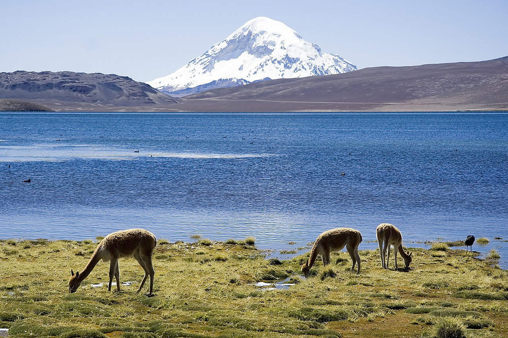
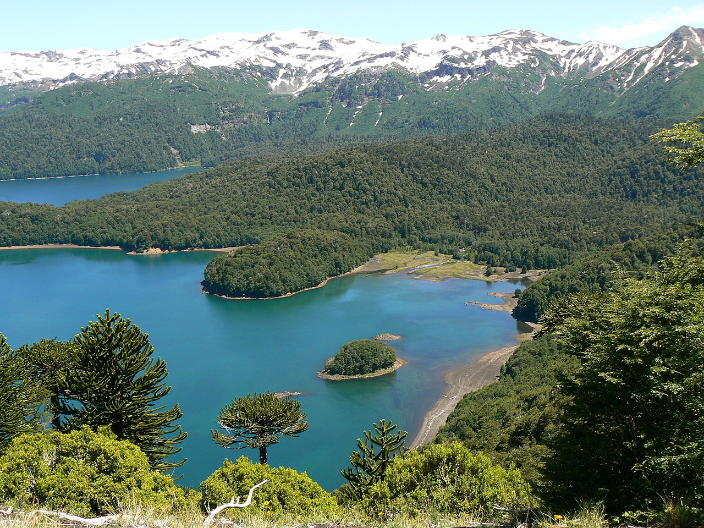
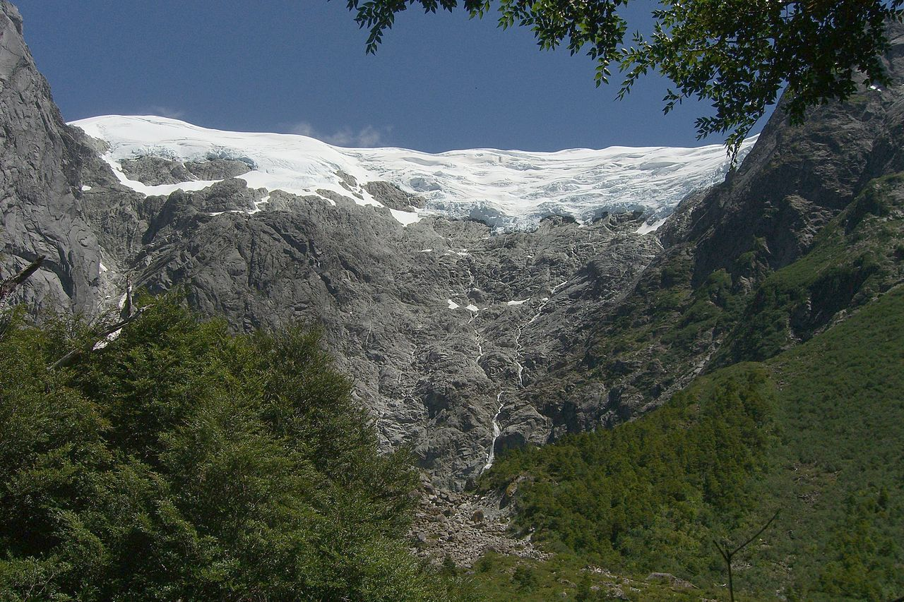

El Parque Nacional Lauca (en aimara: lawq'a, ‘pasto acuático’)? fue creado en Chile en 1965 como reserva forestal y adquirió su actual estatus en 1970 en parque nacional. Su superficie alcanza las 137 883 hectáreas. Comprende la precordillera y el altiplano andino, en altitudes entre los 3200 a 6342 m s. n. m., en el extremo este de la región de Arica y Parinacota, comuna de Putre, provincia de Parinacota, encontrándose al norte de la reserva nacional Las Vicuñas. A su extremo poniente limita con el Río Lluta y al oriente con la frontera con Bolivia. Su nombre lo comparte con el río Lauca. Este parque nacional representa no solo al altiplano, sino que tiene parte de su superficie en la estepa desértica prealtiplánica, ubicada en la precordillera. Presenta lluvias en verano y nieve en el invierno; el clima es seco con 280 mm. de precipitación media anual y una temperatura promedio que oscila entre 12 y 20 °C durante el día y -3 a –10 °C en la noche. El relieve del parque es, en general, irregular. Se destacan los volcanes Parinacota, de 6342 m s. n. m.; Pomerape, de 6282 m s. n. m.; Guallatiri, de 6060 m s. n. m., y Acotango, de 6050 m s. n. m.. En 1981, el parque pasó a ser parte de la lista mundial de reservas de la biosfera de la Unesco. El gobierno chileno estudia la desafectación de parte de este parque nacional para permitir la explotación minera por Codelco, Anglo American, BHP y Río Tinto.
El parque nacional Conguillío está situado en la región de La Araucanía, 148 km al noreste de Temuco, en Chile. Tiene una superficie de 60 832 ha inicialmente formado por dos parques distintos (PN. Conguillío y PN. Los Paraguas) siendo unidos y formando el parque actual. La belleza del parque se debe a sus lagos y lagunas, al volcán Llaima, su vegetación nativa, destacando las araucarias, los ñirres, los coihues, las lengas, palos santos, raulíes, entre otros, que junto con las variadas plantas y flores conforman uno de los parques más visitados de Chile con más de 100.000 visitantes por año, llamando la atención mayormente a los turistas extranjeros, e incluso a la cadena de la BBC quien denominó a este parque nacional como uno de los últimos refugios del mundo en preservar el paisaje donde vivieron los dinosaurios. En este lugar se filmó parte del documental Paseando con dinosaurios, específicamente el capítulo centrado en el Cretácico superior: "Muerte de una dinastía". Uno de los sectores que más atrae a los turistas es la subida a la Sierra Nevada, una alta cordillera volcánica donde se puede ver el comienzo del río Blanco, el lago Conguillío y el volcán Llaima de fondo, otorgando postales únicas para los visitantes.
El parque nacional Queulat (Queolat, «sonido de cascadas» en chono) es un parque nacional chileno, administrado por la Corporación Nacional Forestal (Conaf). Se encuentra en la Región de Aysén del General Carlos Ibáñez del Campo, dividida entre las comunas de Cisnes y Lago Verde. Es uno de los parques naturales más emblemáticos de la Patagonia, al contener algunas de las áreas menos alteradas por la humanidad en la región. Cuenta con una escarpada geografía, frondosos bosques, caídas de agua, fiordos y ríos, lo que lo ha convertido en un importante atractivo turístico de la región de Aysén. Un elemento que caracteriza el parque es la presencia de ventisqueros, siendo el más conocido el llamado «Ventisquero colgante». En el parque la vegetación abunda. Las partes altas están cubiertas principalmente por bosques de coigüe de Magallanes y lenga, siempre acompañados de musgos y hongos. Hacia las partes bajas se concentran el ciprés de las Guaitecas y los tepúes. Además, llaman la atención nalcas, ya que presentan un gran tamaño. Entre las especies de menor tamaño se encuentran el chilco, la luma y la palomita.
